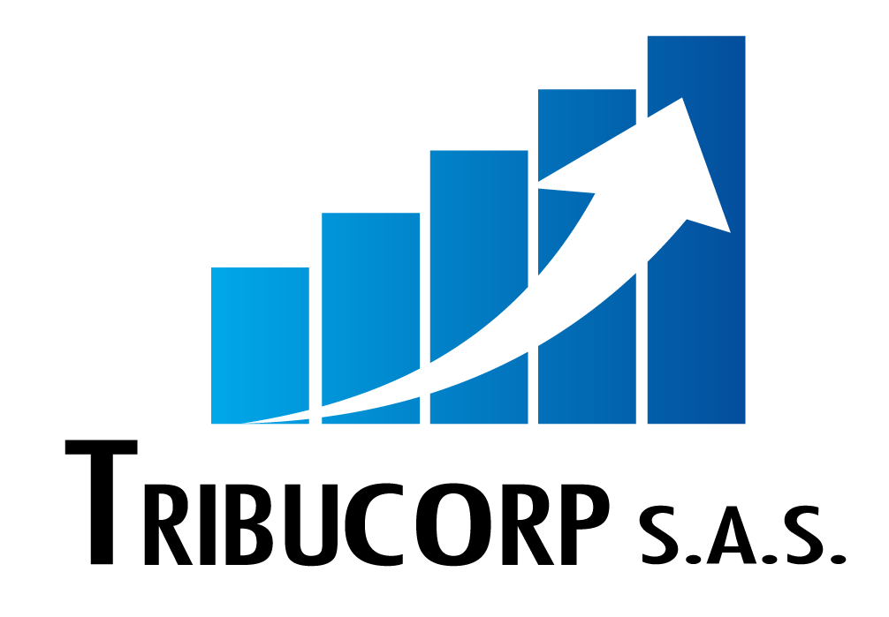

Revisoría fiscal
Cumplimiento normativo, revisión independiente, control interno y acompañamiento a la gestión.

Hablar por WhatsAppAcompañamiento legal, contable, financiero y administrativo para reducir riesgos, ordenar procesos y fortalecer la toma de decisiones de su empresa.
Respuesta directa para evaluar su necesidad: revisoría fiscal, outsourcing contable, asesoría tributaria o ESAL.
Soluciones con beneficios concretos para consultar por WhatsApp sin perder tiempo.
Cumplimiento normativo, revisión independiente, control interno y acompañamiento a la gestión.
Planeación, prevención de riesgos fiscales y soporte frente a obligaciones tributarias.
Gestión contable organizada para tomar decisiones con información clara y oportuna.
Evaluación de procesos, estados financieros, riesgos y oportunidades de mejora.
Soporte jurídico para empresas, grupos familiares, direccionamiento y sucesión patrimonial.
Asesoría tributaria y contable para ESAL, fundaciones y asociaciones en Colombia.
Apoyo operativo y administrativo para liberar carga interna y mejorar el control del negocio.
TRIBUCORP acompaña organizaciones que requieren criterio técnico, continuidad y control.
Descubra cómo podemos acompañar su empresa.
Saber másNecesitan ordenar contabilidad, obligaciones tributarias y reportes financieros.
Saber másBuscan asesoría legal, sucesión, gobierno corporativo y planeación tributaria.
Saber másRequieren independencia, criterio técnico y acompañamiento permanente.
Saber másQuieren prevenir sanciones, errores contables y problemas ante entidades de control.
Saber másNuestros clientes confiaron en TRIBUCORP S.A.S. y respondimos con transparencia, cumplimiento y soluciones efectivas.
Profesionales con visión legal, contable y tributaria para aportar criterio, orden y confianza en la toma de decisiones.

Director Jurídico
Abogado de la Universidad de La Sabana con más de 25 años de experiencia. Especialista en Comunicación Organizacional y Derecho Tributario. Doctor en Derecho de la Universidad de Salamanca.
Hablar con nosotrosCuéntenos su caso por WhatsApp y le orientamos hacia el servicio adecuado para su empresa.
Contactar por WhatsApp